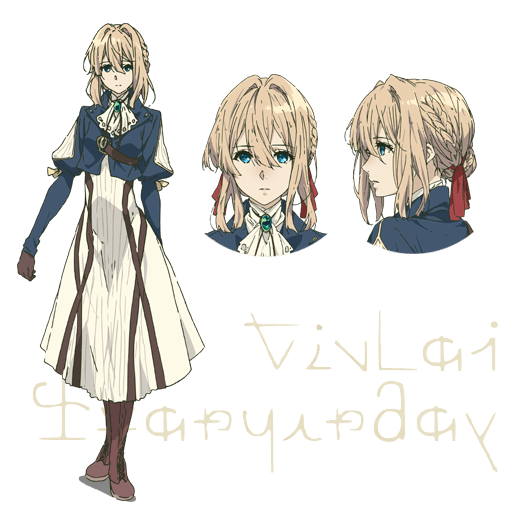
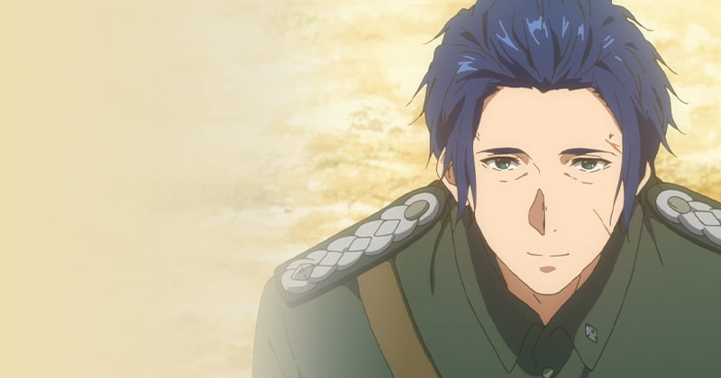
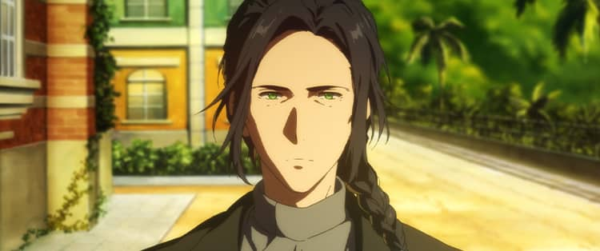
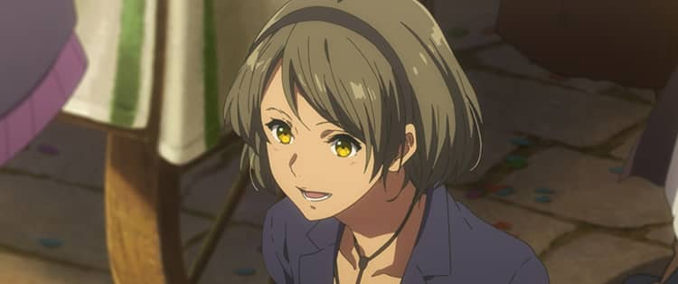
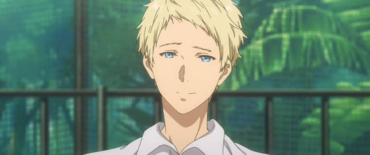
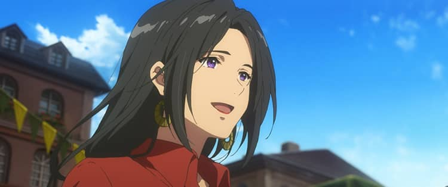
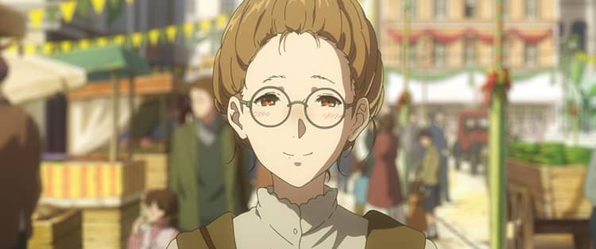
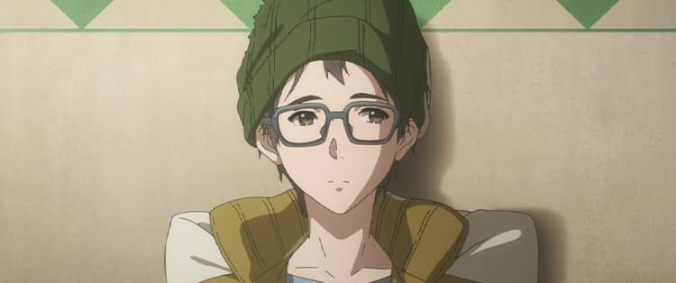

幼年作为军人参与战争，曾只会执行命令，不理解情感与语言的重量。
战争结束后，她成为“自動手記人形”，替他人写信，也在代笔中学习理解自己。
她一直追寻少佐留下的那句话含义: “我爱你”。这句未被读懂的话，成为她成长的起点。

Character
从“不会表达”到“理解爱与告别”，她在一封封信里学会成为一个真正的人。

幼年作为军人参与战争，曾只会执行命令，不理解情感与语言的重量。
战争结束后，她成为“自動手記人形”，替他人写信，也在代笔中学习理解自己。
她一直追寻少佐留下的那句话含义: “我爱你”。这句未被读懂的话，成为她成长的起点。
角色简介参考 TV / 剧场版 Character 页面整理，文案为中文归纳版。
以代笔工作理解“爱”的意义，始终怀抱对少佐的思念。

给予薇尔莉特名字与人生方向的人，也是她情感成长的核心坐标。
C.H 邮政社社长，战后收留并照顾薇尔莉特，见证她一步步改变。

少佐之兄，对薇尔莉特态度复杂，却也推动了她面对过去。

同为自動手記人形，性格直率，始终把薇尔莉特当作追赶目标。

C.H 邮政社配送员，用行动把信件真正送到每一个人的手中。

资深代笔人，洞察力强，常在关键时刻给予后辈支持与提醒。

曾任 C.H 代笔人，后来向着作家梦想前进，体现“写作改变人生”的另一种路径。

剧场版委托人之一，用一封信完成了无法当面说出口的告别。
从“命令关系”转向“被理解的爱”，是整部作品最核心的情感主线。
邮政社提供了她作为“人”重新学习生活、表达与共情的现实空间。
每一次代笔都是双向治愈: 她帮助他人表达，也借此修复自身创伤。
“我想知道，‘我爱你’是什么意思。”
“忘记是不可能的，但我会继续向前。”
“信件不是文字的排列，而是心意被抵达的方式。”